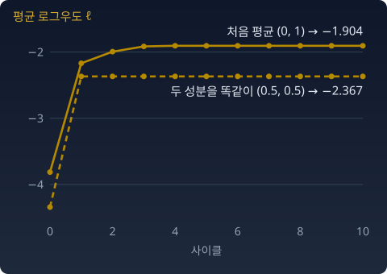

EM의 수렴: 값은 멈춰도 답은 하나가 아니다
값이 내려가기만 한다면 EM은 어딘가에 도착한다. 그런데 무엇이 도착하는가? 값인가, 모수인가? 그리고 그 도착점은 가장 좋은 답인가?
수렴하는 것과 수렴하지 않는 것
단조감소하는 수열이 아래로 유계이면(어떤 값 밑으로는 내려가지 않으면) 수렴한다. x가 이산이면 𝓛 = KL ≥ 0이 하한이다. 그래서 목적함수의 "값"은 수렴한다. 아래 그림은 같은 이야기를 로그우도 ℓ(𝓛에 −를 붙이고 상수를 더한 것)로 그린 것이다. EM 절 파이썬의 데이터(평균 −2와 3인 두 봉우리에서 뽑은 100개)에 두 성분 혼합을 처음 값 두 가지로 맞췄다. 처음 평균을 (0, 1)로 두면 −1.904에서 멈춘다. 두 성분을 똑같이 (0.5, 0.5)에 두면 두 성분이 끝까지 똑같이 움직여, 봉우리 하나짜리 답 −2.367에서 멈춘다. 두 줄 모두 한 번도 내려가지 않았고, 둘 다 "수렴"했다.

여기서 조심할 것이 세 가지다.
첫째, 수렴하는 것은 값이지 모수가 아니다. 값이 멈췄다고 모수가 한 점으로 모인다는 보장은 없다. 모수의 수렴은 추가 조건 아래에서 따로 증명해야 한다(제프 우, 1983).
둘째, 도착하는 곳은 전역해(가능한 모든 모수 가운데 가장 좋은 답)가 아니라 기울기가 0인 점(정류점)이다. 대개는 국소 최댓값이지만, 위 그림의 점선처럼 안장점(말안장처럼 어떤 방향으로는 오르막이고 어떤 방향으로는 내리막인, 기울기가 0인 점)에 멈출 수도 있다. 초기값에 따라 다른 곳에 도착한다. 아래 위젯에서 리셋을 눌러 보면 바로 보인다.
셋째, 하한이 늘 있는지는 따로 따져야 한다. 위의 하한 KL ≥ 0은 x가 이산일 때의 이야기다. 키나 몸무게처럼 x가 연속인 데이터에서도 같은 말을 할 수 있는지는 아래 문제 9에서 들여다본다.
속도에 대해서도 한마디. EM이 해 근처에서 얼마나 빨리 다가가는지는 "빠진 정보의 비율"이 정한다(뎀프스터·레어드·루빈, 1977). 완전데이터가 가졌을 피셔 정보(모수를 조금 움직일 때 분포가 얼마나 달라지는지 재는 양) 가운데 z를 못 봐서 잃은 몫이다. 봉우리들이 많이 겹쳐 z를 추측하기 어려울수록 이 비율이 1에 가까워지고, EM은 느려진다.
불러오는 중…
한 사이클 안의 풍경
EM의 한 사이클 안에 이 교재의 많은 것이 들어 있다.
- 분포가 점이고, 결합분포의 공간이 무대다.
- 목적함수가 KL이다.
- 두 길(혼합/지수)이 두 면의 평탄함이 된다.
- F(θ)의 볼록성 덕에 M-스텝의 답이 하나다.
- 완전데이터 모형이 지수족이면 M-스텝은 모멘트 일치다.
- 데이터 면과 모형 면이 마주 선다.
- 수렴 속도는 빠진 피셔 정보의 비율이 정한다.
- 열어 두기(E)와 확정하기(M)가 번갈아 온다.
- 두 걸음은 e-사영과 m-사영이다.
- 피타고라스가 매 스텝의 감소량을 잰다.
M-스텝의 답이 하나인 것과 EM 전체의 답이 하나인 것은 다르다. 한 스텝 안의 문제는 볼록하지만, 두 변수를 함께 보면 볼록하지 않다. 그래서 국소해가 생긴다.
한 알고리즘의 한 스텝을 정직하게 이해하려면 이만큼의 풍경이 필요했다.
수확
“EM에서 수렴하는 것은 값이지 모수가 아니고, 도착하는 곳은 초기값이 정하는 정류점이다. 값의 수렴도 목적함수가 아래로 유계일 때만 보장된다.”
문제 7. 놀이터의 더 좋은 나눔
1 m, 3 m, 6 m, 11 m 자리의 아이 넷을 선생님 둘이 맡는다. 무리를 나누고 선생님이 무리의 한가운데에 서면, 아이와 자기 선생님 사이 거리의 제곱을 모두 더한 "흩어짐"이 정해진다. (가) 아이 넷을 두 무리로 나누는 방법을 모두 따져, 흩어짐이 가장 작은 나눔을 찾아라. (나) 선생님 둘이 0 m와 4 m에서 시작해 "가까운 쪽 무리에 들기 → 무리 한가운데로 옮기기"를 번갈아 하면 흩어짐 14.50에서 멈춘다. (가)의 답과 같은가? (다) 처음 자리를 5 m와 11 m로 바꾸면 어디서 멈추는가?
함께 풀기

번갈아 하기는 내려가기만 하니까, 멈춘 14.50이 가장 작은 값이겠죠. {1, 3}과 {6, 11}로 나뉘었어요.

나누는 방법이 몇 가지나 돼요? 다 세어 볼 수 있겠어요?

한쪽이 비지 않게 나누면 일곱 가지예요. {1, 3, 6}과 {11}로 나누면 선생님이 3.33 m와 11 m에 서서 흩어짐이 5.44 + 0.11 + 7.11 + 0 = 12.67이에요. 14.50보다 작아요.

어, 그럼 14.50에서는 왜 안 움직였죠? 6 m 아이가 3.33 m 쪽으로 가면 더 좋아지는데요.
14.50에서 멈췄을 때 선생님은 2 m와 8.5 m에 있었어요. 그 자리에서 6 m 아이에게 더 가까운 선생님은 누구예요?

8.5 m 선생님이요. 2.5 m 대 4 m. 그래서 ①에서는 안 옮겨 가고, 무리가 그대로니 ②에서도 선생님이 안 움직여요. 두 일 모두 "이 이상 한 번에 나아질 수 없다"고 말하는 자리라 멈춘 거예요. 가장 좋은 자리라서가 아니라요.
(다)는 5 m와 11 m에서 시작하면 {1, 3, 6}이 5 m 쪽, {11}이 11 m 쪽이 돼서 선생님이 3.33 m와 11 m로 가요. 12.67에서 멈춰요. 시작 자리만 바꿨는데 가장 좋은 나눔에 닿았어요.
내려가기만 한다는 건 "어딘가에 멈춘다"까지만 말해 주는 거네요. 어디에 멈추는지는 출발점이 정하고요.
문제 8. 초기값이 도착지를 정한다
아래 위젯과 같은 데이터를 쓴다. 평균 −3, 0.5, 3.5, 표준편차 0.8, 1.0, 0.6, 혼합 비중 0.35, 0.40, 0.25인 세 봉우리에서 뽑은 200개다. 여기에 세 성분 혼합 가우시안을 EM으로 맞춘다. 초기 평균은 데이터에서 무작위로 세 점을 뽑고, σ = 1, 혼합 비중은 1/3로 둔다. 무작위로 뽑는 방법을 초기값 번호 0~199로 정해 200가지 초기값을 만들고, 각각 EM을 수렴할 때까지(한 사이클에 ℓ이 10⁻⁷보다 적게 오를 때까지) 돌린다. (가) 초기값 7번은 어디에 도착하는가? (나) 200개의 최종 평균 로그우도는 어떻게 나뉘는가? (다) 가장 높은 값에 도착하는 모수는 하나뿐인가? 위젯에 초기값 번호를 넣으면 같은 초기값으로 돌려 볼 수 있다.
함께 풀기
7번으로 돌렸더니 89사이클 만에 멈췄어요. ℓ = −2.230, 평균이 (−3.38, −3.06, 1.31)이에요. 이게 답이요.
봉우리가 −3, 0.5, 3.5에 있다고 했는데, 평균 셋이 어디에 있어요?
둘이 −3 근처에 몰렸고 하나가 1.3에 있어요. 0.5랑 3.5를 하나가 같이 덮고 있네요. 놀이터에서 선생님 둘이 {1, 3}, {6, 11}로 나뉜 채 멈춘 거랑 같은 모양이에요.
초기값 탓 아니야? 혼합 가우시안의 로그우도는 로그 안에 가우시안이 있으니까 오목할 것 같아요. 오목하면 극댓값이 곧 최댓값이고 하나뿐이잖아요. 초기값을 바꿔도 같은 데로 가야 해요.
서연 학생, 성분 1과 성분 2의 이름표를 바꿔 달면 로그우도가 달라져요?
안 달라져요. 합이니까 순서가 상관없어요.
그러면 최댓값을 주는 모수가 몇 개예요?

이름표 바꾸기만으로 3! = 6개요. 엄격하게 오목한 함수는 최댓값을 주는 점이 하나여야 하는데 여섯 개니까… 오목할 수가 없어요. 로그 안에 합이 있어서 log-sum이 오목성을 깨요. 그러면 봉우리 사이에 골짜기도 있고, 7번 같은 데서 멈출 자리도 생기는 거고요.
200개를 다 돌려 봤어요. 158번은 ℓ = −2.199, 평균 (−3.08, 0.44, 3.42)에 닿았어요. 18번은 −2.197로 조금 더 높은데, 평균 (−3.17, 0.64, 3.51)에 혼합 비중이 많이 달라요. 나머지 24번은 −2.230에서 −2.238 사이이고, 7번처럼 두 성분이 한 곳에 몰렸어요.
가장 높은 쪽이 200번 중 18번이네요. 그래도 EM 입장에서는 24번도 모두 "수렴"이에요. 값이 더는 안 오르니까요.
조별 과제에서 첫 회의 때 역할을 잘못 나누면, 매주 조금씩 나아져도 끝까지 그 구조로 가는 거랑 비슷해요. 중간에 판을 다시 짜지는 않으니까.
수학 수업에서 "기울기가 0인 점은 후보일 뿐"이라고 했던 게 이거네요. EM의 단조성은 후보에 도착한다는 것까지만 말해 줘요.
그럼 실전에서는 어떻게 하면 좋을까요?
초기값을 여러 개로 돌려서 ℓ이 가장 높은 걸 고르면 되겠네요. 방금 200개 돌린 것처럼요.
처음부터 좋은 데서 시작하는 방법도 있겠어요. 놀이터 선생님들처럼 점을 가까운 중심으로 나누고 중심을 옮기는 일(k-means라고 부르는 방법)을 먼저 해서, 그 중심을 초기 평균으로 쓰는 거요.
둘 다 실제로 쓰는 방법이에요.
문제 9. 무한대로 가는 우도 (킬러)
EM 절 파이썬의 데이터 100개(평균 −2와 3인 두 봉우리에서 뽑은 것)에 두 성분 혼합 가우시안을 맞춘다. 성분 1의 평균을 데이터 한 점 x₁ 위에 놓고 σ₁ → 0으로 보낸다(w₁ = 0.01, 성분 2는 전체 데이터의 평균과 표준편차). (가) 평균 로그우도 ℓ은 어떻게 되는가? (나) 이것은 "EM에서 KL은 단조감소하고 KL ≥ 0이므로 수렴한다"는 본문의 논리와 모순인가? (다) 성분 1을 x₁ 위에 σ₁ = 0.01, w₁ = 0.01로 놓고 EM을 돌리면 어디로 가는가?
함께 풀기
(가) 계산했어요. σ₁ = 0.1이면 ℓ = −2.358, 1e-5면 −2.296, 1e-20이면 −1.950, 1e-100이면 −0.108이요.
파이썬 절에서 EM이 찾은 "좋은 해"는 ℓ이 얼마였어요?
−1.904요. 1e-100짜리 바늘 하나 꽂은 게 그것보다 높아요. 이러면 최대우도 추정이 바늘이 되는 거예요?
한 점 위에 폭 σ₁인 가우시안을 세우면 그 점의 밀도가 1/σ₁에 비례하니까, log가 −log σ₁로 무한히 커져요. 다른 99개 점은 성분 2가 받쳐 주니까 유한하고요. 그래서 ℓ의 상한이 없어요. 최댓값이 존재하지 않아요.
그럼 σ에 하한 0.1을 걸면 해결이죠. 위젯 코드에도 그런 거 있던데요.
하한을 1e-20으로 걸면요?
…그러면 −1.950이라 여전히 좋은 해 −1.904보다 조금 낮지만, 1e-50쯤이면 넘어가겠네요. 하한을 어디에 거느냐에 따라 답이 바뀌어요. 해결이 아니라 문제를 하한 뒤로 숨긴 거예요.
그래도 (나)는 모순 아니에요? 본문은 KL이 단조감소하고 0 이상이니까 수렴한다고 했잖아요. 단조감소하고 아래로 유계인 수열은 수렴하니까, EM이 만드는 모수는 어딘가로 수렴해야 하고, 그럼 바늘로 무한히 가는 일은 없어야 해요.
두 개를 물을게요. 그 수열은 무엇의 수열이에요? 그리고 여기서 KL ≥ 0이 정말 하한이에요?
수열은… 목적함수 값의 수열이에요. 모수가 아니고요. 값이 수렴해도 모수가 모인다는 말은 아니에요. 그건 제가 섞었어요.
그리고 하한은… KL(p̂‖pθ) = −ℓ + 상수였는데, 그 상수가 뭐였더라.
p̂의 엔트로피였어요. 데이터 100개 위에 점으로만 놓인 분포라면, 키나 몸무게처럼 이어진 값의 엔트로피는 얼마가 될까요?

점 위에만 있으면 밀도가 한없이 뾰족해서 엔트로피가 −∞로 가요. 그러면 상수가 무한대라 KL ≥ 0이 −ℓ에 대해서는 아무 하한도 주지 못해요. 실제로 줄이는 건 −ℓ뿐이고, 방금 −ℓ은 −∞까지 내려갈 수 있다는 걸 봤어요.

그러니까 "KL ≥ 0이니까 유계"라는 전제가 연속 데이터에서는 없었던 거예요. 모순이 아니라 전제가 빠진 거예요. 이산 데이터였으면 p̂(x)에 밀도가 필요 없으니 KL ≥ 0이 진짜 하한이고요.
그래요. 그러면 (다)로 가 봐요. 실제 EM은 바늘로 빠져요?
돌려 봤어요. 8사이클이면 멈춰요. σ₁ = 0.0127, w₁ = 0.0236, ℓ = −2.343이요. 무한대로 안 가고 x₁ 근처 점 두어 개를 붙잡은 좁은 성분으로 멈췄어요.
근처에 다른 점이 있으니까 σ₁을 더 줄이면 그 점들을 놓쳐서 손해인 거예요. 거기가 정류점이고요. 좋은 해 −1.904보다 한참 낮은데 EM은 거기서 "수렴"했어요.

결국 세 가지가 다 다른 말이네요. 값이 수렴한다. 모수가 수렴한다. 좋은 데로 수렴한다. 본문의 단조성은 첫 번째만, 그것도 하한이 있을 때만 말해 줘요.
값 말고 뒤의 두 물음을 따로 물은 것이 제프 우의 1983년 논문이에요. 그럼 이 틈은 실전에서 어떻게 막을까요? σ 하한 말고요.
σ가 0 쪽으로 가는 걸 처음부터 덜 그럴듯하게 만들면 되지 않을까요. σ에 사전분포를 주고, 우도 대신 사후확률을 가장 크게 하는 식으로요.
성분 하나가 점 하나로 쪼그라들면 그 성분만 다시 초기화하는 방법도 있겠네요.

둘 다 실제로 쓰는 방법이에요. 앞의 것을 사후확률 최대화(MAP)라고 불러요. 하한을 걸더라도 "문제를 숨겼다"는 걸 알고 거는 것과 모르고 거는 것은 달라요.
과제 채점 스크립트가 "에러 없이 끝남"을 통과로 치는 거랑 비슷해요. 끝났다고 맞은 건 아니죠.
해석학 수업의 단조수렴정리가 "단조 + 유계"라고 두 조건을 따로 적는 이유를 이제 알겠어요. 유계는 공짜가 아니에요.